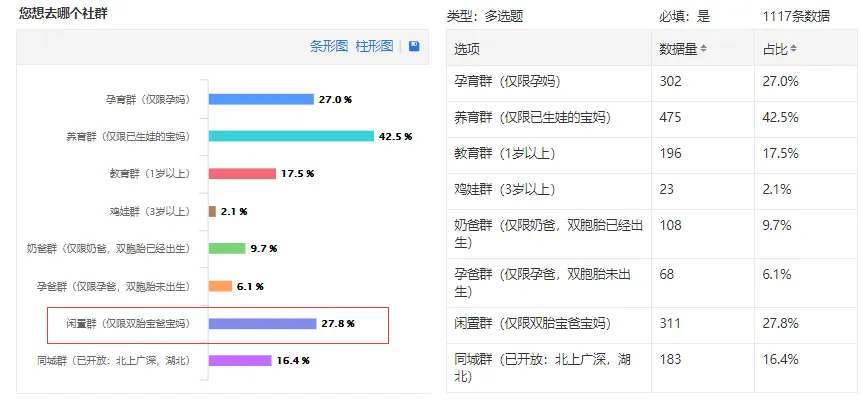

孖仔帮
公众号ID：twinsbang
关注
文|圆圈妈
网图|侵删
[SVG Icon]
[SVG Icon]
家有双胞胎离不开买买买，
但是很容易就会买过火，不小心囤太多！
来看看我们收集到的情报，双胞胎家庭最想去的社群，闲置群排名第二。
就看这架势就知道，养一对双胞胎多烧钱，无下限的买买买导致的后遗症多烧脑。
孖仔帮原有的闲置群一度被挤爆门槛导致封群，可把我们小助手愁坏了！
一边是孕育群的妈妈们急需求购二手闲置物品，另一边是养育群和教育群的妈妈急需处理用不上，买错或多拍的闲置品。
我太难了，天晓得处理一堆让人爱恨交加的闲置物得有多大的勇气啊！
扔了？
PLS！那可是真金白银买的，扔了多可惜，我还不至于土豪到那种地步；
送人？
OH come on ,哪好意思送出去，每条裤子都有双胞胎的便便，尿尿和不知名的污秽物….
摆地摊？
Really？恐怕只有一个结局：啥都没卖出去，倒又买了一大堆衣服玩具；
放闲鱼？
NO！我不想天天被叮咚：亲，包邮吗？少点呗？为什么要卖？东西怎样？质量好吗？几成新？
怎么办？
来我们孖仔帮吧！
有个双胞胎家庭专属的跳蚤市场>>
为各位曾经疯狂买买买，现在愁着卖卖卖的爸爸妈妈们提供一个免费渠道。
你不必为了不知道送谁而烦恼，还担心被人嫌弃
不必在大街上摆摊叫破喉咙没人买，自己反而不小心又买了一堆。
你只需要来到我们孖仔帮的跳蚤市场群；
发个图片，吼一声，所有闲置物品都能转起来；
跳蚤市场适合谁？
双胞胎长大了，奶粉要升级了，尿不湿要换码数了，柔湿巾囤太多了；
怀孕时用的胎心仪，托腹带…卸货后就不再需要了；
新手孕妈，刚怀上双胎，一脸懵逼，买些啥神器保护下日渐膨胀的巨肚；
新手辣妈，刚生下双胎，想要省钱又实用的东西；
前辈妈妈，双胞胎已入园，那些绘本，玩具，零零碎碎，走到哪里都会踩到，急需处理；
...
在跳蚤市场可以做什么？
可以转让闲置物品，可以淘二手物品，大多数都是双胎专用的物品，运气好的话，还可以淘到双胎育儿神器哦，还可以听听过来人的使用心得，找点带双胞胎的灵感。
如何进入跳蚤市场群？
关注“孖仔帮”，对话框输入“赶集”，获取入群邀请链接。
温馨提示：
1，仅限200人入群，满员后入群邀请码即失效；
2，跳蚤市场仅开放3天，集市结束后，群会解散；
3，跳蚤市场每个月举办2场，时间不固定；
4，如有大额交易，请保持谨慎，孖仔帮不承担任何因交易引发的任何责任；
5，跳蚤市场不灌水，不聊天，仅适用于闲置物品的发布转让，如需进入双胞胎育儿社群，请在公众号对话框输入“社群”，获取入群方式。
特别提醒：
1：请将转让的物品写上清晰的价格、描述时与实物相符，新旧程度和使用情况等等；
2：请将转让的物品照片拍清晰，包括细节。色差问题请注明；
3：请不要以赚钱为目地，这里是二手闲置场所，是把自己用不着的闲置物以合理价格转给需要的人，不是来谋利的。如发现违规者被举报直接移除出群；
4：请将物品介绍要有一说一，实事求是。不带含有欺骗；诈骗等性质；
5：请将要转出的物品打包时细心检查，并且包装完好。贵重物品请务必保价；
6：卖/买家没有支付宝（连接）的，做为卖/买家一定要三思而后行；
7：买家尊重卖家，将心比心，不要以消失/不回复等不礼貌进行跑单；
8：请不要过于夸张吹捧自己的物品与价格，事实求是，诚心为首；
9：无论卖家还是买家，之间产生任何交易纠纷都与本平台无关，请双方尽量私下协商解决；
10：大家都来自双胞胎家庭，都知道养大一对双胞胎有多难，请摸着自己的良心交易！君子爱财，取之有道！
这是第一期跳蚤市场，纯属公益，希望越办越好，希望真正能解决到双胞胎家庭闲置物品太多无处安放的问题，我们真诚地欢迎来自各方的心声和建议，欢迎评论区留言哦，多谢关注与支持！
-END-
今日互动话题
#对跳蚤市场有什么建议吗？#
评论区聊一聊呗！
微信公众号：孖仔帮
ID : twinsbang
专注双胞胎孕育，养育，教育经验分享
扫码关注我们
点一下你会更好看耶

